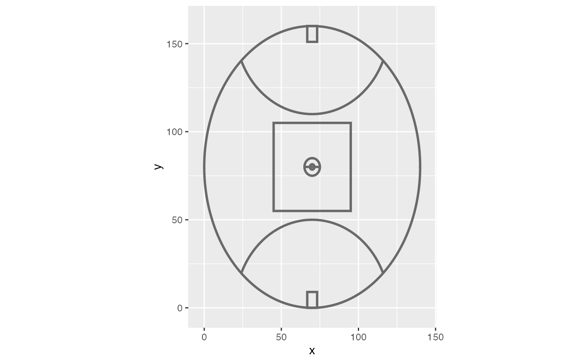
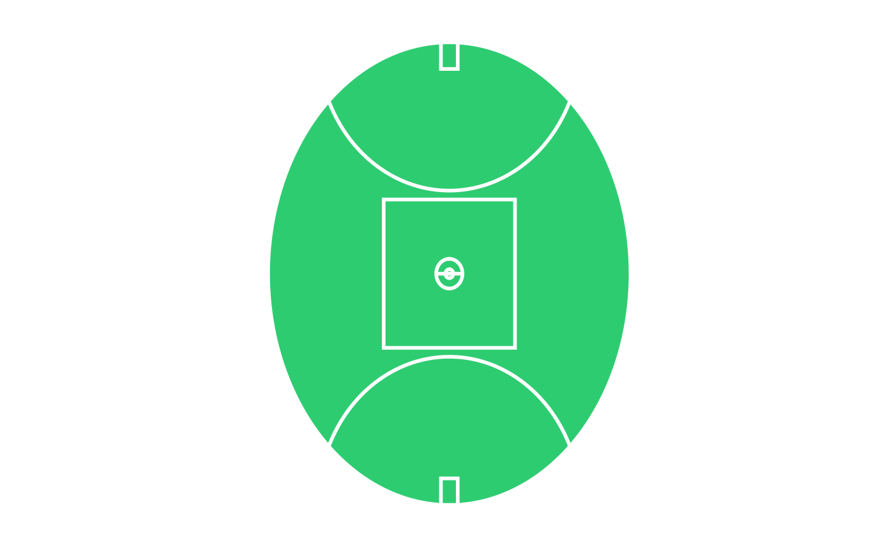
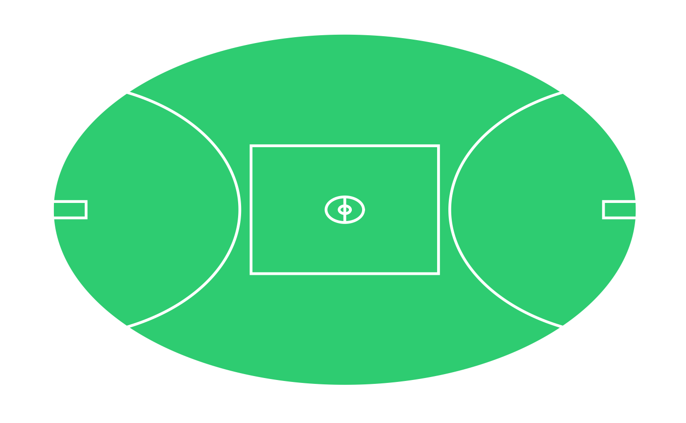

The package can create annotations for AFL grounds, with common ground dimensions provided as part of the package.
knitr::opts_chunk$set(warning = FALSE, message = FALSE) library(AusSportGrounds) library(ggplot2)
Basic Usage
Since the functions are implemented as ggplot layers, it is simple to build a ground. You only have to provide some dimensions that define the length and width of the ground.
# Create basic AFL field dim <- list(length = 160, width = 140) ggplot() + annotate_afl_oval(dim)

There are also some built in dimensions for common grounds such as ground_mcg.
ggplot() + annotate_afl_oval(ground_mcg)
You can also customise the origin for the co-ordinate system. By default, x = 0 will co-incide with the left-boundary and y = 0 will be the bottom goal-square. In this sense, the origin is in the bottom left (outside of the actual field of play). You could change this so that the origin was the middle of the ground.
origin <- list(x = -ground_mcg$width/2, y = -ground_mcg$length/2) ggplot() + annotate_afl_oval(ground_mcg, origin = origin)
You can use the built in theme_ground to remove all of the ggplot axis to make a clean chart.
# Add blank theme ggplot() + annotate_afl_oval(ground_mcg) + theme_ground()
Customising the look and feel
Any valid ggplot theme element can also be passed into annotate_afl_oval. Here we can provide a background with the fill argument.
# Create the Gabba ggplot() + annotate_afl_oval(dim = ground_gabba, colour = "white", fill = "#2ecc71") + theme_ground()

You could also flip the co-ordinates.
# Create the Gabba ggplot() + annotate_afl_oval(dim = ground_gabba, colour = "white", fill = "#2ecc71") + theme_ground() + coord_flip()
 ## Adding data
Depending on the data you have, you may need to transform it into the right coordinate system (or adjust the ‘origin’ argument). For simplicity sake, let’s assume we don’t have to do that.
Here we take some position data and plot it as points on our oval.
dat <- data.frame(x = c(90, 85, 82, 78, 83, 74, 94, 91), y = c(43, 40, 52, 56, 44, 71, 60, 54)) # Create the Gabba ggplot() + annotate_afl_oval(dim = ground_gabba, colour = "white", fill = "#2ecc71") + geom_point(data = dat, aes(x = x, y = y), colour = "black") + theme_ground()

# Need to fix issue with data causing fill to misbehave